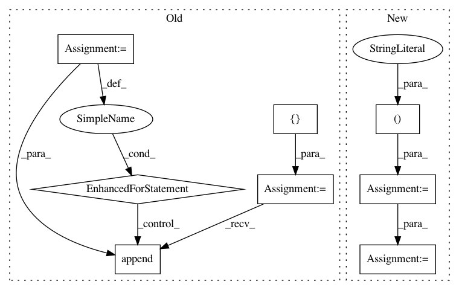

f58745ab284f48b7ef4ce813f5f8cd26bdb3c0a8,pgmpy/inference/Sampling.py,BayesianModelSampling,forward_sample,#BayesianModelSampling#,31
Before Change
for node in self.topological_order:
cpd = self.cpds[node]
if cpd.evidence:
weights = []
for i in range(size):
evid = [sampled[var][i] for var in cpd.evidence]
weights.append(cpd.reduce(evid, inplace=False).values)
sampled[node] = sample_discrete(cpd.variables[cpd.variable], weights)
else:
// can generate the column at once
weights = cpd.values
After Change
for index, node in enumerate(self.topological_order):
cpd = self.cpds[node]
if cpd.evidence:
evidence = sampled.values[:, :index].tolist()
weights = np.apply_along_axis(lambda t: cpd.reduce(t, inplace=False).values, 1, evidence)
sampled[node] = sample_discrete(cpd.variables[cpd.variable], weights)
else:
sampled[node] = sample_discrete(cpd.variables[cpd.variable], cpd.values, size)
return sampled
In pattern: SUPERPATTERN
Frequency: 3
Non-data size: 8
Instances
Project Name: pgmpy/pgmpy
Commit Name: f58745ab284f48b7ef4ce813f5f8cd26bdb3c0a8
Time: 2015-06-16
Author: ankurankan@gmail.com
File Name: pgmpy/inference/Sampling.py
Class Name: BayesianModelSampling
Method Name: forward_sample
Project Name: data61/python-paillier
Commit Name: 96416b889c76f3b6d15af0e3dfd0d4cb2b8b2d23
Time: 2017-06-15
Author: giorgio.patrini@anu.edu.au
File Name: examples/paillier_logistic_regression.py
Class Name: Alice
Method Name: encrypt_weights
Project Name: scikit-learn-contrib/DESlib
Commit Name: f7a04171e58eb43dfe5b18d06c76481cdf1c5da9
Time: 2018-03-29
Author: rafaelmenelau@gmail.com
File Name: deslib/dcs/lca.py
Class Name: LCA
Method Name: estimate_competence